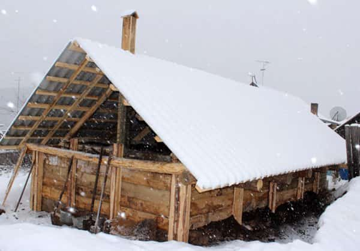
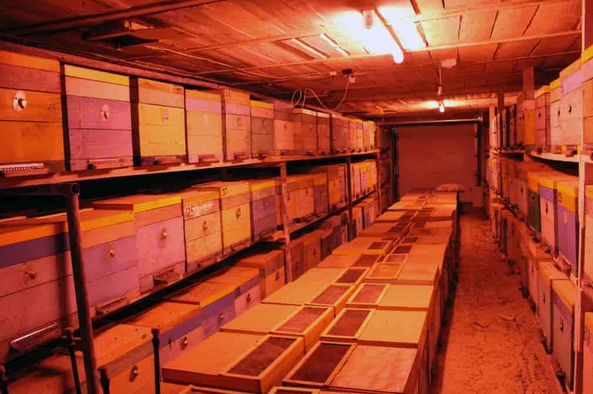

Омшаник
Омшаник для зимовки пчел - это специальное устройство, которое используется пчеловодами для защиты пчёл и ульев от негативного воздействия холодов, ветра и влаги в зимний период. Вот более подробное описание омшаника для зимовки:

Защита от холода и влаги:
Основная функция омшаника для зимовки - это создание дополнительного слоя защиты для пчёл и улья от холода и влаги. Омшаник устанавливается на входе в улей и предотвращает проникновение холодного воздуха и осадков внутрь улья. Это помогает сохранить оптимальную температуру и влажность внутри улья, что является важным условием для выживания пчёл в зимний период.
Вентиляция:
В то же время омшаник обеспечивает необходимую вентиляцию внутри улья, позволяя пчёлам получать свежий воздух и избегать перегрева в затворенном пространстве. Это особенно важно в зимний период, когда уровень влажности в улье может быть высоким из-за сосредоточенного тепла пчёл и запасов мёда.
Материалы и конструкция:
Омшаники для зимовки пчел могут быть выполнены из различных материалов, таких как дерево, пластик или металл. Они обычно имеют открытую сетчатую конструкцию, которая позволяет пчёлам свободно входить и выходить из улья, а также обеспечивает хорошую вентиляцию. Для дополнительной защиты от холода и влаги омшаник может быть дополнительно утеплён.
Установка и обслуживание:
Установка омшаника для зимовки пчел осуществляется на входе в улей, используя специальные крепления или кронштейны. Омшаник должен быть установлен таким образом, чтобы не создавать препятствий для пчёл и обеспечивать им свободный доступ к улью. Регулярное обслуживание омшаника включает в себя очистку от мусора и пчёл, проверку его целостности и ремонт при необходимости.

Омшаник для зимовки пчел является важным элементом в пчеловодстве, который помогает обеспечить безопасные и комфортные условия для пчёл в зимний период, что в конечном итоге способствует успешной зимовке и высокой выживаемости пчелиной популяции.